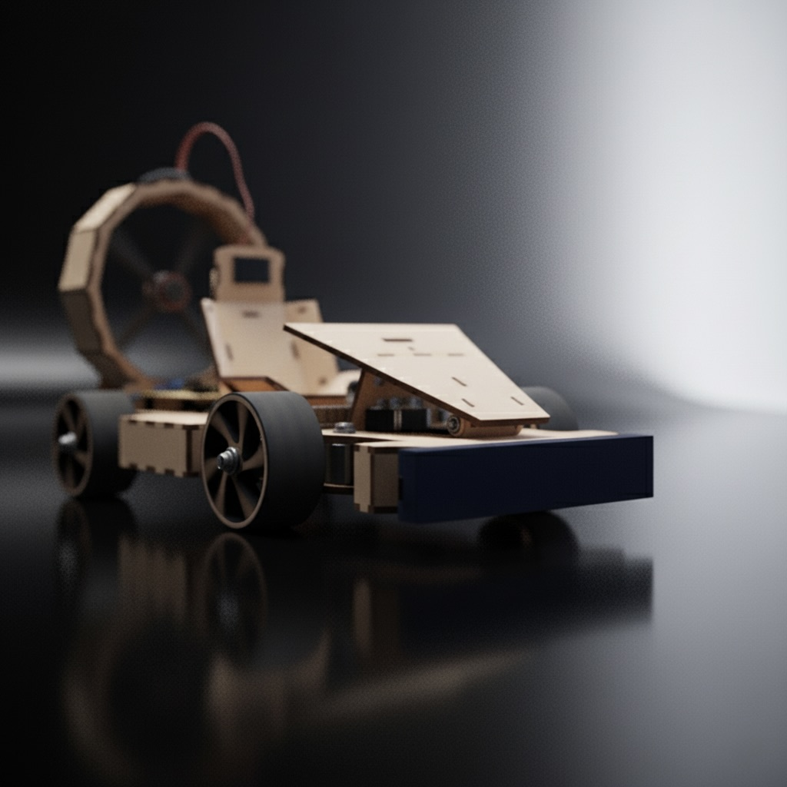
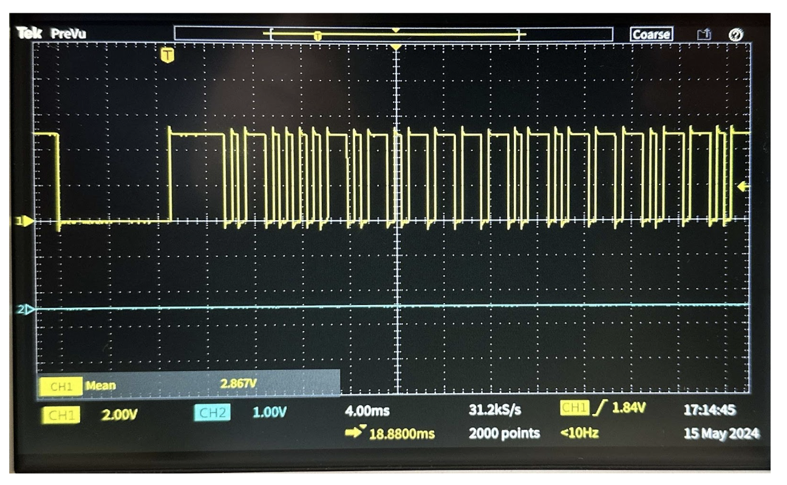
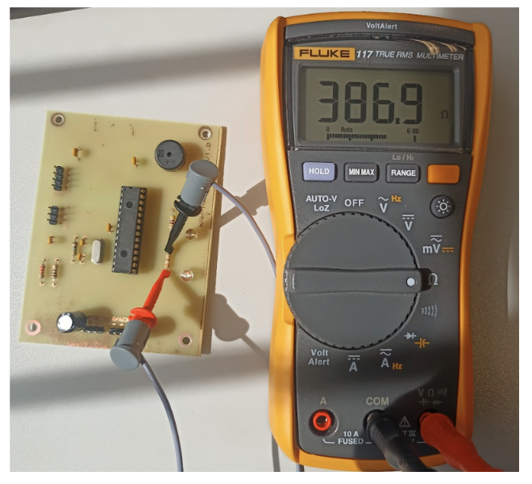
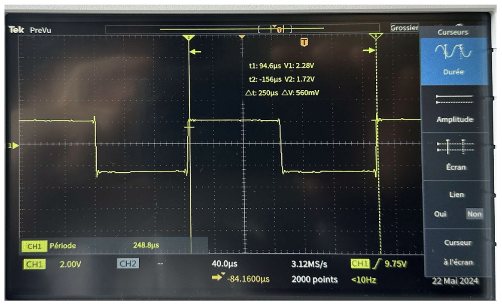
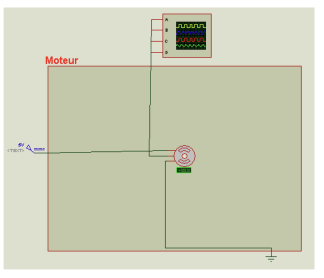
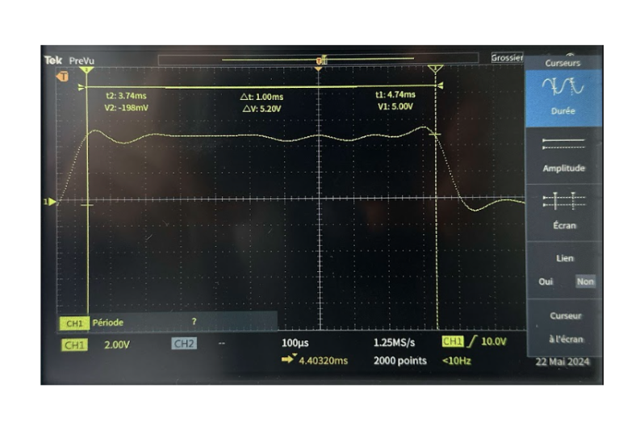

SAE Kart à Hélice — récepteur et télécommande.
Introduction
Dans le cadre du projet “Kart à Hélice” (KAH), j'ai été chargé de vérifier certaines spécificités techniques de la carte électronique du récepteur du Kart à Hélice afin de s'assurer que les exigences du Cahier des charges (CDC) sont bien respectées. J'ai personnellement appliqué une procédure d'essai afin de vérifier les exigences relatives aux blocs “Acquisition” et “Action” de ce récepteur. Cette tâche est cruciale pour s’assurer que toutes les spécifications techniques et les exigences du cahier des charges sont respectées avant de passer à l’étape suivante du projet.
Pour réaliser les tests, j’ai d’abord préparé tout le matériel nécessaire, y compris :
Un multimètre pour mesurer les tensions, courants et valeurs de résistance.
Un oscilloscope pour visualiser les signaux électriques.
Une alimentation stabilisée pour fournir une tension constante et sécurisée au système.
La télécommande (émetteur) et le Kart à Hélice (récepteur).
Preuves — Acquisition
Schéma de mesure d'acquisition d'information du récepteur
Schéma de mesure d'acquisition d'information du récepteur (DDV).
Le bloc “Acquisition” du Cahier des charges concernant le récepteur du kart à hélice ne comportait qu'une seule exigence selon laquelle il doit pouvoir recevoir les trames d'information envoyées par l'émetteur (la télécommande). J'ai donc vérifié durant cet essai que c'était bien le cas.
Cette vérification est essentielle pour assurer la communication efficace entre l'émetteur et le récepteur, condition sine qua non pour le bon fonctionnement du kart télécommandé.
J'ai utilisé pour cela une source d'alimentation (générateur) réglée en 5V afin d'alimenter le récepteur en ayant pris soin de télécharger le code informatique dans le microcontrôleur Arduino. J'ai ensuite branché un câble banane afin de pouvoir visualiser le signal reçu en entrée par le récepteur. Après avoir relié les masses entre elles, j'ai positionné la pointe du câble connecté à l'entrée de l'oscilloscope sur la broche “s” de signal sur le récepteur infrarouge lui-même connecté en entrée du récepteur. Puis j'ai généré un signal à l'aide de la télécommande préalablement conçue actionnant une commande quelconque. Le code de son microcontrôleur avait été téléchargé au préalable par d'autres équipiers.
Ainsi, j'ai pu visualiser un signal de réception sur l'écran de l'oscilloscope ce qui répond bien aux attentes du CDC en matière de vérification de réception d'information. Le signal émis de manière infrarouge (lumineuse) est donc visualisé sous forme électrique.
Preuve — Signal reçu
Visualisation sur oscilloscope du signal reçu

Visualisation sur oscilloscope du signal reçu par le récepteur (DDV).
La capture oscilloscope confirme la réception des trames infrarouges envoyées par la télécommande lors de l’essai d’acquisition.
Contextualisation des objectifs des essais de vérification — Action
L’objectif des essais de vérification pour le récepteur du kart à hélice est de s’assurer que toutes les fonctionnalités critiques répondent aux attentes définies dans le cahier des charges.
Le récepteur doit comporter un indicateur lumineux vert d'une certaine intensité pour informer l’utilisateur que le système est sous tension, garantissant ainsi que le kart est prêt à fonctionner. Un autre indicateur lumineux bleu d'une autre intensité doit s’allumer uniquement lorsque le récepteur reçoit correctement une nouvelle commande infrarouge valide. Si les commandes sont absentes, incorrectes ou si l’adresse est fausse, cet indicateur doit rester éteint, confirmant ainsi la fiabilité de la communication entre l’émetteur et le récepteur.
En termes de contrôle du mouvement, le récepteur doit générer des signaux pour piloter efficacement les composants du kart. Pour ajuster la vitesse du moteur, un signal PWM doit être produit en fonction des commandes reçues. Ce signal contrôle la puissance du moteur brushless, assurant une réponse précise aux commandes de l’utilisateur. De même, pour diriger les roues du kart, le récepteur doit envoyer un signal PWM pour commander le servomoteur de direction, permettant au kart de tourner selon les instructions données.
En ce qui concerne les fonctions additionnelles, le récepteur doit être capable de générer un signal sonore spécifique pour activer le klaxon du kart. Ce signal doit être précis pour garantir que le klaxon fonctionne correctement lorsque l’utilisateur appuie sur le bouton dédié.
Ainsi, l’ensemble de ces essais de vérification vise à confirmer que le récepteur du kart à hélice fonctionne parfaitement, en assurant une communication fiable, un contrôle précis des mouvements, et des indications claires pour l’utilisateur.
Procédure d'essai — Action
Preuves de vérification du bloc Action
LED verte — intensité lumineuse
Schéma de mesure de l'intensité lumineuse de l'indicateur vert (DDV).
Afin de vérifier l'intensité lumineuse de l'indicateur vert, on cherche à mesurer le courant le traversant. Il doit correspondre l'intensité lumineuse exigée par le CDC. Je me suis donc appuyé sur sa fiche technique “L-9294CGCK.pdf”. Ne pouvant pas mesurer le courant sans abîmer le circuit, je le déduis en mesurant la tension à ses bornes en plaçant les broches + et - du multimètre réglé en mode voltmètre sur les bornes (conformément à ma fiche de synthèse “comment mesurer un courant dans un circuit électronique ?”). Je mesure également la valeur de sa résistance associée en plaçant ces broches de part et d'autre de la résistance après avoir réglé le multimètre en mode ohmmètre.
La carte électronique était préalablement alimentée en 5V à l'aide d'un générateur.
LED verte — mesure de résistance
Mesure de la résistance associée à la LED verte (DDV).
La résistance associée à la LED verte est mesurée à l’ohmmètre pour confirmer la valeur utilisée lors du calcul du courant lumineux.
La mesure de tension permet de déduire le courant traversant la LED et de vérifier que l’intensité lumineuse exigée est atteinte.
LED bleue — intensité lumineuse
Schéma de mesure de l'intensité lumineuse de l'indicateur bleu de connexion (DDV).
Pour la vérification d'intensité de la LED bleue, la logique reste la même. Cependant j'ai dû émettre un signal quelconque à l'aide de la télécommande afin d'allumer cet indicateur de connexion.
LED bleue — mesure de résistance

Mesure de la résistance associée à la LED bleue (DDV).
La résistance associée à la LED bleue est mesurée à l’ohmmètre afin de valider le montage de l’indicateur de connexion.
J'ai ensuite vérifié la bonne fréquence du buzzer (klaxon) en branchant un oscilloscope aux bornes du buzzer. La masse du câble banane branché à l'entrée 1 de l'oscilloscope était branchée sur la masse du récepteur et la pointe du câble sur la broche positive du buzzer connectée en sortie de la broche 4 du microcontrôleur. Après un appui sur le bouton poussoir de la télécommande, j'ai pu constater sur l'écran de l'oscilloscope un signal de forme carré. J'ai pu analyser sa période (temps pour que le même motif ou impulsion se répète) et en déduire par calcul si la fréquence correspondante était conforme au CDC.
Klaxon — signal carré observé

Visualisation du signal carré en entrée du buzzer (DDV).
La forme carrée observée valide le comportement attendu du signal sonore utilisé pour le klaxon.
Servomoteur — signal PWM
Schéma de mesure du signal en entrée du servomoteur (DDV).
Concernant la vérification du signal en entrée du servomoteur (contrôleur de direction), j'ai procédé de la même manière que pour celle du buzzer. Néanmoins, j'ai pris soin de brancher la pointe du câble de l'oscilloscope sur la broche “s” (signal) du servomoteur connecté au récepteur. J'ai ensuite envoyé au récepteur par l'intermédiaire de l'émetteur des informations de direction en 3 étapes : commande de direction en position la plus à gauche, puis au milieu et enfin la plus à droite. J'ai ainsi pu analyser la bonne cohérence du signal sur l'écran de l'oscilloscope. En effet, lorsque la période (durée de l'impulsion) variait de 1 ms pour la position gauche, 1,5 ms pour la position du milieu (roues droites) à 2 ms pour la position droite, cette régularité répond aux attentes du CDC.
Capture oscilloscope correspondant à la position droite du servomoteur.
Moteur brushless — signal PWM

Schéma de mesure du signal en entrée du moteur (DDV).
Pour vérifier le signal en entrée du moteur connecté au récepteur, la procédure est restée la même en ayant pris soin de brancher la pointe de l'oscilloscope à la broche “s” du moteur. Après 3 variations de la commande de vitesse de la télécommande (position min, position milieu et position max) les résultats sont restés inchangés par rapport au signal du servomoteur.
Cela est cohérent d'un point de vue informatique dans le sens où la valeur d'angle du servomoteur et la valeur de puissance du moteur étaient codées toutes deux sur 15 positions. Il est donc normal que les valeurs de période d'impulsion de leur signal soient identiques en fonction de la position des curseurs de commande de la télécommande.
Moteur brushless — visualisation oscilloscope

Position minimale — signal carré observé à l'oscilloscope (DDV).
Capture oscilloscope correspondant à la position minimale de la commande moteur.
Moteur brushless — position milieu
Position milieu — signal carré observé à l'oscilloscope (DDV).
Capture oscilloscope correspondant à la position milieu de la commande moteur.
Moteur brushless — position maximale
Position maximale — signal carré observé à l'oscilloscope (DDV).
Capture oscilloscope correspondant à la position maximale de la commande moteur.
Conclusion Kart à Hélice
La réalisation de cette phase de tests selon cette procédure décrite plus en détail dans le dossier de vérification (DDV) a permis de vérifier que le système du “Kart à Hélice” fonctionne conformément aux spécifications techniques et aux attentes définies dans le cahier des charges (CDC). Cette étape est essentielle pour garantir la fiabilité et la performance du produit final avant de procéder aux étapes ultérieures de développement et de fabrication.